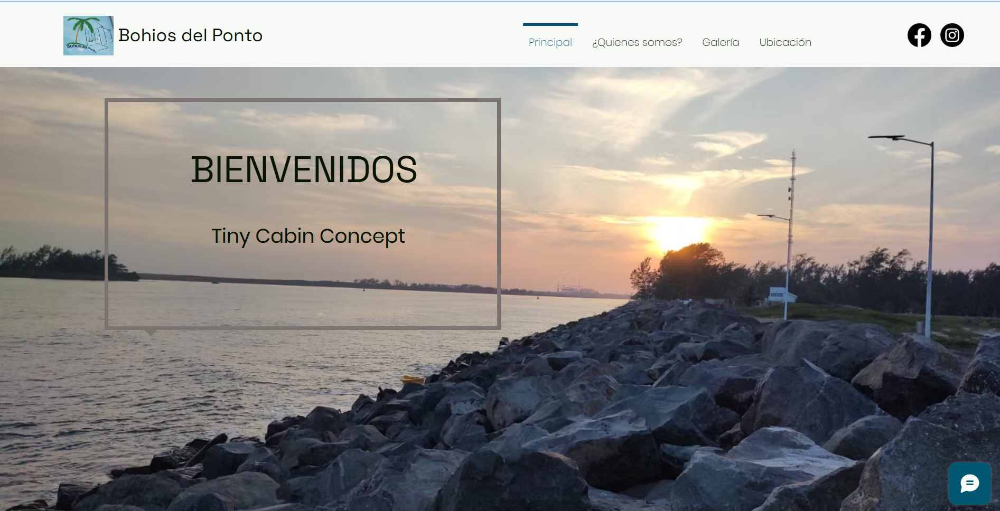
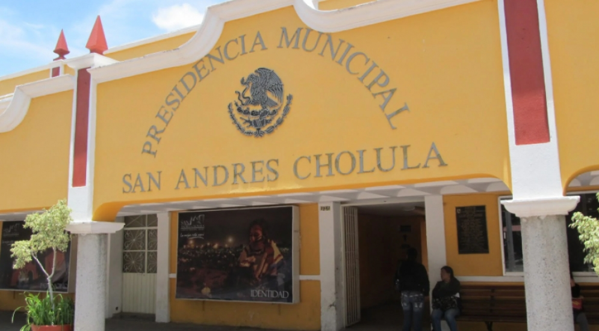
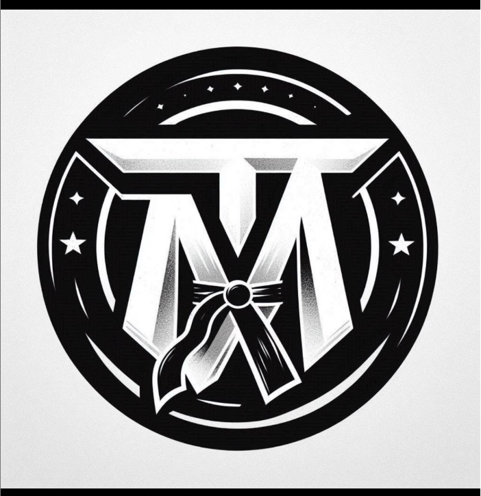

Formación Académica
Licenciatura en Ingeniería en Sistemas Computacionales
Universidad Politécnica Metropolitana de Puebla – (2021 - 2025)
Durante mi formación universitaria adquirí conocimientos técnicos y prácticos sobre distintas ramas de la computación.
Área de Ingenierias - Taller
Instituto La Paz de Puebla A. C. – (2017 - 2020)
Durante mi etapa de preparatoria, pude realizar proyectos pequeños en programación y mecatrónica, el cual me impulsaron a tener un descubrimiento propio por las tecnologías.
Mi Proceso Creativo
A la hora de crear un proyecto, sigo un proceso estructurado pero flexible:
- Explorar: Analizo el objetivo del proyecto.
- Diseñar: Hago bocetos y prototipos.
- Construir: Maqueto y agrego interactividad.
- Probar: Verifico funcionamiento en distintos dispositivos.
Mis Servicios
- Sitios web estáticos
- Landing pages
- Prototipos visuales
- Asesoría básica en diseño visual
Proyectos destacados

Cabañas
Sitio web informativo para el hostal Bohíos del Ponto en Veracruz, con secciones de habitaciones, servicios, ubicación y contacto.
Diseño moderno, festivo y responsivo para atraer turistas todo el año, especialmente en temporadas vacacionales.
Ver proyecto

Programa de gestión de recursos
Creación de un sistema web que recopila la información y los datos de los recursos materiales para una institución privada.

Diseño de publicidad para Escuela de Taekwondo
Desarrollo de varios diseños promocionales para una escuela de taekwondo con el objetivo de aumentar la visibilidad local e inscripciones.
El proyecto incluyó la creación de varios posts con información clave (horarios, ubicación, precios) y gráficos atractivos.
Instagram
Referencias
A continuación, algunas personas que pueden dar referencias sobre mi trabajo y compromiso:
- Lic. Guadalupe Contreras – Coordinadora del Hostal Bohíos | 222-324-4532
- Ing. Ernesto Carmona – Compañero de trabajo en el desarrollo del Programa de gestión de recursos | ernca00@gmail.com
- Lic. Misael López – | Propietario de la Escuela de Taekwondo | misa_lopj@hotmail.com